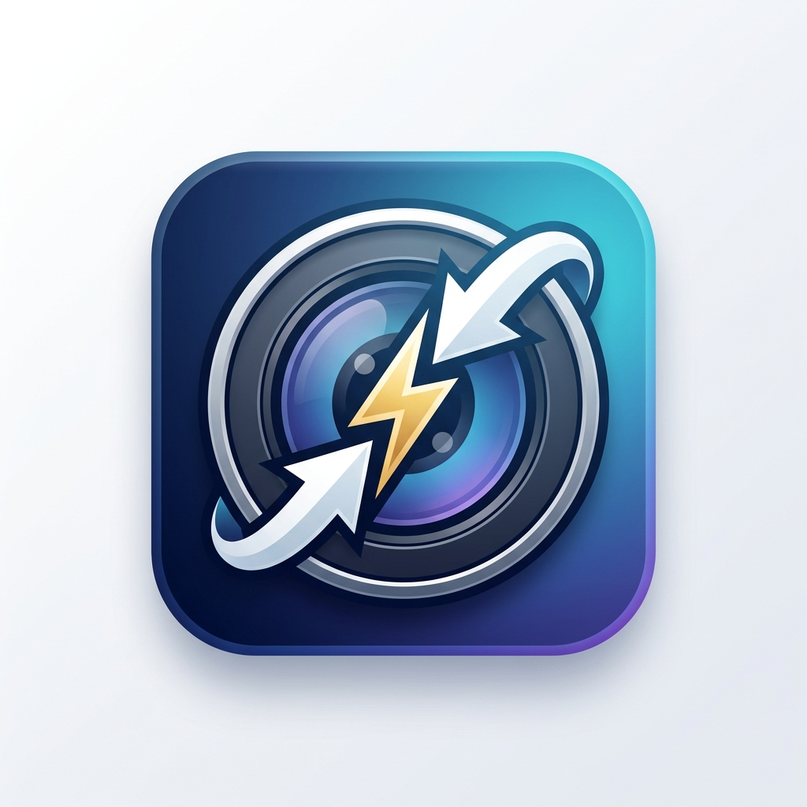

Reduce el peso de tus imágenes, ajusta resoluciones y aplica marcas de agua masivamente, directamente desde tu escritorio.
> Optimizando imagen 15 de 150...
> Reducción de 5MB a 850KB lograda (Calidad: 75)
> Marca de agua añadida exitosamente.
Optimiza cientos de fotos en segundos utilizando tecnología de subprocesos múltiples.
Aplica tu logo (PNG) a todas tus imágenes de forma automática con opacidad y posición personalizada.
Define peso máximo en MB, dimensiones máximas y calidad límite para garantizar los mejores resultados sin pérdida exagerada.